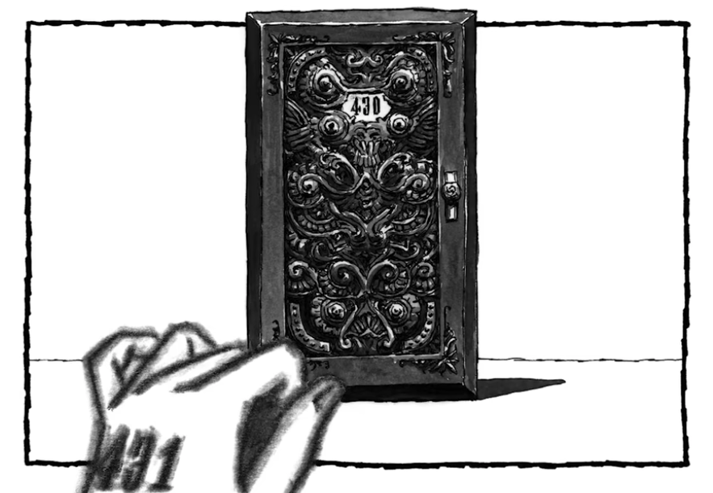

Você, Alice, acaba acordando em um quarto vazio e á uma porta a sua frente "430" e para sair desta mansão você tem que chegar a porta 000, então irá passar por mais de 400 quartos até lá e todos customizados com os desejos de cada hóspede, mas tem uma condição, a cada quarto que você passar seu corpo irá apodrecer mais e mais, só que a gente é teimoso então iremos de qualquer jeito. Para isso você pode ir devagar e ir para a porta 430 ou simplemente para a porta 413.
Você começa sua jornada na porta 430, a corte do rei, um rei gigante e o juíz daquela cidade, e ano após ano, julga e mata a mesma pessoa que atormentava ele, mas nunca estava satisfeito já que a pessoa nunca se arrependia já que era só um "sonho" esse quarto. Vamos seguir em frente que já está ficando perigoso.
Em Pernambuco, você visita a histórica cidade de Olinda. Na carta, uma das pistas indica que para localizar a entrada para a cidade perdida você deve procurar a próxima pista em um dos pontos turísticos da cidade. Por qual você começa?
Nesse querto, a gravidade estava... invertida? O hóspede desse quarto desejou se tornar um passáro, ela voa todos os dias esquecendo que já foi humana. No entanto, não queremos ficar em um mundo de mentiras que nós mesmos criamos. Vamos seguir em frente.

Você decide que essa aventura de quartos não é para você, então vamos ficar aqui até sei lá quando.
Nas igrejas de Olinda, você descobre um mapa antigo escondido atrás de um altar, apontando que a próxima pista está no Amazonas.
Explorando as praias, você encontra uma caverna escondida, mas ela leva a um beco sem saída.

No quarto 385, seu corpo apodrece mais e mais ganhando características de cada hóspede, mas esse não é o grande problema agora já que um mostro quase te ataca e um herói te salva, seu nome é Heragram, que desejou se tornar um herói e lutar contra seu pai que o precionava para achar emprego, noivar, casar... É melhor você sair desse quarto.
De volta às igrejas, você finalmente encontra o mapa antigo. Agora, para o Amazonas!
Quarto 254, quarto 237, 220, 189, seu corpo apodrece mais e mais, e não pretende parar até passar pelo quarto de número 100. Assim que você passa... você morre, mas tem algo errado, todo hóspede que tenta sair daquela mansão se tornam palavras, mas... você não? Então instantaneamente você revive e em alta velocidade avança para o próximo e também morre, mas você sempre se levanta de novo, de novo, de novo, e mais uma vez, até que você chaga enfim ao quarto 000. Então, vamos ir?
O rio à direita termina em uma área pantanosa. Apesar de belas vistas, não há sinais da cidade perdida aqui.

Dentro no quarto 0, voltamos para a realidade e... não tem ningém. Você na verdade era uma super criatura divina, que em uma país ensolar, era uma princesa que tinha uma memória peculiar e uma doença que não a deixava sair da cama. Um dia, ordenou que todos os livros de todos os cantos do mundo fossem trazidos a ela e assim criou um livro que parcia uma arma super poderosa de tanto poder tinha aquele livro possuia. Aquela mansão que estavamos, era só uma parte do livro real, e Alice queria essas páginas de volta, consumindo os hóspedes, os sentimentos, os desejos, tenho que adicionar palavras. Embora, não tenha mais ninguém para ler.
Retornando e escolhendo o rio à esquerda, você finalmente encontra a cachoeira escondida e as inscrições que levam à cidade perdida.